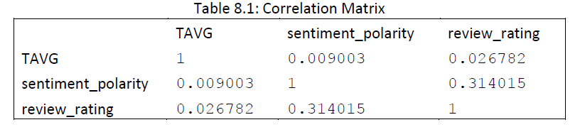

The Relationship between Weather and Yelp Reviews
1. Introduction
Does the weather affect people's moods so much that they will rate restaurants lower or higher? Do people write more positive, five-star reviews on nice days because they are in a better mood? Does good weather lead to people have better experiences at restaurants, and lead to positive reviews? In general, we know that people are affected by the weather. And many researchers have conducted studies towards this issue. For example, in 2013, Horanont, et al. [1] use GPS location traces on mobile phones to passively track behavioral patterns in different weather. They found that people tend to stay at restaurants longer in colder weather. But does this effect also detectable in restaurant reviews? To investigate the answer, we conducted this research by using data from Yelp and NOAA.gov, a government website that contains daily weather data of every weather stations in the United States.
In this project, we compute sentiment analysis on the text of Yelp reviews. We look for correlations between the Yelp ratings and sentiment and the weather. We then attempt to predict the given Yelp rating based on the weather on the day of the review and the location of the restaurant. Beyond our principal data science question, we investigate regional differences in Yelp reviews and also determine relationships among the food-items mentioned in both high and low-star reviews.
The project is divided into the following sections. In Section 2, we discuss the process of data collection, data cleaning and the description of our data. In Section 3, we present our various methods and results. Finally, in Section 4, the overall results are discussed.
In this project, we compute sentiment analysis on the text of Yelp reviews. We look for correlations between the Yelp ratings and sentiment and the weather. We then attempt to predict the given Yelp rating based on the weather on the day of the review and the location of the restaurant. Beyond our principal data science question, we investigate regional differences in Yelp reviews and also determine relationships among the food-items mentioned in both high and low-star reviews.
The project is divided into the following sections. In Section 2, we discuss the process of data collection, data cleaning and the description of our data. In Section 3, we present our various methods and results. Finally, in Section 4, the overall results are discussed.
2. Data
2.1 Data Collection
We collected data from two sources, Yelp and the National Oceanic and Atmospheric Administration (NOAA). Both provide rich data that is free and accessible.
Using Yelp's API, we collected restaurant review and detail data from restaurants across US. We pulled three recent (between January 2017-October 2017) reviews from twenty restaurants across the top 300 most populous counties in the US. The Yelp data is sourced from two datasets. The Yelp Review data contains review excerpts (not full text) by restaurant with the rating, date, username of the reviewer, and URL link to the review. We merged that data with the Yelp Detail data which provides restaurant-level details, including latitude and longitude, address, city, phone number, category (pizza, tacos, etc.), price range, overall star rating, and number of reviews.
We collected the weather data from NOAA's Global Historical Climatology Network, which is a database containing daily weather measurements from weather stations across the world for 2017-to-date, including precipitation, temperature, and snowfall.
Click here for the full details of the data collection process.
Using Yelp's API, we collected restaurant review and detail data from restaurants across US. We pulled three recent (between January 2017-October 2017) reviews from twenty restaurants across the top 300 most populous counties in the US. The Yelp data is sourced from two datasets. The Yelp Review data contains review excerpts (not full text) by restaurant with the rating, date, username of the reviewer, and URL link to the review. We merged that data with the Yelp Detail data which provides restaurant-level details, including latitude and longitude, address, city, phone number, category (pizza, tacos, etc.), price range, overall star rating, and number of reviews.
We collected the weather data from NOAA's Global Historical Climatology Network, which is a database containing daily weather measurements from weather stations across the world for 2017-to-date, including precipitation, temperature, and snowfall.
Click here for the full details of the data collection process.
2.2 Data Cleaning and Preprocessing
To clean and prepare the data for analysis, we performed the following tasks.
(1) We checked the Data for outliers, missing values and duplicates. Then we used the restaurant_id column as the key to merge the restaurant reviews and restaurant details. Thus, we get a data set that contains the latitude, longitude and time for each review.
(2) We used the package geopy to calculate the distances between restaurants and stations in a range of +/- 1 latitude and longitude, which is approximately 69 miles for latitude or longitude, for each restaurant.
(3) We selected the closest station's data that have observed values on the same day as each review. We dropped 19 reviews because we could not find a close enough weather station with data for that day.
(4) We created new features, specifically of interest is the region bin.
Click here for the full details of the data cleaning and data merging process.
(1) We checked the Data for outliers, missing values and duplicates. Then we used the restaurant_id column as the key to merge the restaurant reviews and restaurant details. Thus, we get a data set that contains the latitude, longitude and time for each review.
(2) We used the package geopy to calculate the distances between restaurants and stations in a range of +/- 1 latitude and longitude, which is approximately 69 miles for latitude or longitude, for each restaurant.
(3) We selected the closest station's data that have observed values on the same day as each review. We dropped 19 reviews because we could not find a close enough weather station with data for that day.
(4) We created new features, specifically of interest is the region bin.
Click here for the full details of the data cleaning and data merging process.
2.3 Data Overview
After cleaning and preprocessing, we have a final dataset. Our final, cleaned dataset contains 14,788 reviews from 5,263 restaurants with weather measurements (temperature, precipitation and snow) for each day of the review from the nearest weather station. The below visualization, in Figure 2.3, shows the scope of our data.

3.1 Sentiment Analysis
We performed sentiment analysis on the text of the review excerpts using the Python package NLTK and the library TextBlob. Results were mixed. There is not a strong correlation between the computed sentiment and the given star rating, with a correlation coefficient of 0.32. In Figure 3.1.1, the rating is plotted against the sentiment. The correlation, although weak, is visible. As the Yelp rating moves to 5-stars, the polarity of the sentiment also increases.
Figure 3.1.1: Scatterplot of sentiment_polarity and review_rating

In Figure 3.1.2 below, the sentiment analysis is compared with the given Yelp rating. The sentiment analysis classifies 88% of 5-star reviews as Positive. On the other hand, the sentiment analysis only classifies 46% of 1-star reviews as Negative. The alignment is not perfect, again suggesting some performance issues in the sentiment analysis.
Figure 3.1.2: Sentiment Classification by Review Rating

Isolating some of the reviews as examples, we can see some of the successes and failures of the sentiment analysis.
Example. 1: 1-star, classified as negative
"What a terrible experience! Empty restaurant, bad service, wonky temperature settings, food poisoning. Pretty much sums up my night! We paid $180.00...."
Example. 2: 5-star, classified as positive
"Stopped in for a weekday lunch. What a treat! Oktoberfest menu was great! Brat was delicious! Awesome counter service too...friendly and informative...."
Example. 3: 1-star, classified as positive
"Sitting here, I am absolutely astounded that previous reviews are, mostly, so overwhelmingly positive."
"The one and only good thing about this place is they have a decent rose."
Example. 4: 5-stars, classified as negative
"I do not give 5 stars often but this chicken joint is OUTSTANDING! I'm so glad we stopped in from out of town."
"A hidden gem!"
In example 3, the reviewers use positive words to describe a bad experience, which causes the sentiment analysis to fail. The same problem occurs in example 4. The second review in example 4 is so short which is difficult for sentiment analysis to classify.
Finally, we generated a word cloud, in Figure 3.1.3, based on the frequency of words in the reviews using the wordcloud package in NLTK. The largest words (and thus most common) tend to be positive, for example, "good", "great", and "love". This is expected as the majority of reviews in our dataset were classified as positive (83%), and given 5-star reviews (55%).
Figure 3.1.3 Yelp Reviews Word Cloud

In Figure 3.1.2 below, the sentiment analysis is compared with the given Yelp rating. The sentiment analysis classifies 88% of 5-star reviews as Positive. On the other hand, the sentiment analysis only classifies 46% of 1-star reviews as Negative. The alignment is not perfect, again suggesting some performance issues in the sentiment analysis.
Isolating some of the reviews as examples, we can see some of the successes and failures of the sentiment analysis.
"What a terrible experience! Empty restaurant, bad service, wonky temperature settings, food poisoning. Pretty much sums up my night! We paid $180.00...."
Example. 2: 5-star, classified as positive
"Stopped in for a weekday lunch. What a treat! Oktoberfest menu was great! Brat was delicious! Awesome counter service too...friendly and informative...."
Example. 3: 1-star, classified as positive
"Sitting here, I am absolutely astounded that previous reviews are, mostly, so overwhelmingly positive."
"The one and only good thing about this place is they have a decent rose."
Example. 4: 5-stars, classified as negative
"I do not give 5 stars often but this chicken joint is OUTSTANDING! I'm so glad we stopped in from out of town."
"A hidden gem!"
In example 3, the reviewers use positive words to describe a bad experience, which causes the sentiment analysis to fail. The same problem occurs in example 4. The second review in example 4 is so short which is difficult for sentiment analysis to classify.
Finally, we generated a word cloud, in Figure 3.1.3, based on the frequency of words in the reviews using the wordcloud package in NLTK. The largest words (and thus most common) tend to be positive, for example, "good", "great", and "love". This is expected as the majority of reviews in our dataset were classified as positive (83%), and given 5-star reviews (55%).
3.2 Analysis - Relationship between Weather and Reviews
3.2.1 Text Mining
First, we mined the reviews for weather-related terms (i.e. rainy, humid). 0.7% of reviews include weather-related terms. A few reviews that mention the weather in a positive way are shown in the examples below.
Example 5: Positive weather mentions in Yelp reviews
"What an afternoon of perfection. Great location, great food and awesome weather! I know the Back Porch isn't responsible for the cool breeze, but the ample.."
"What do you do when it's a rainy Saturday afternoon on the beach? You park it at a local beach bar of course! Live music, relaxed feel and only a few people..."
"Came here on a rainy Friday afternoon with my husband. What a lovely spot! First of all the decor and architecture of the space was intriguing and vibrant..."
In Example 6, the good weather is mentioned, but in a negative way since it leads to crowds at that particular restaurant.
Example 6: Negative weather mentions in Yelp Reviews
"Ugh! I have tried to eat at this place three times, forget about it. I was excited to go today the weather is beautiful and they have outdoor seating, but I.."
Although only a few reviewers explicitly mention the weather in their Yelp review, the effect could still be implicit.
"What an afternoon of perfection. Great location, great food and awesome weather! I know the Back Porch isn't responsible for the cool breeze, but the ample.."
"What do you do when it's a rainy Saturday afternoon on the beach? You park it at a local beach bar of course! Live music, relaxed feel and only a few people..."
"Came here on a rainy Friday afternoon with my husband. What a lovely spot! First of all the decor and architecture of the space was intriguing and vibrant..."
In Example 6, the good weather is mentioned, but in a negative way since it leads to crowds at that particular restaurant.
"Ugh! I have tried to eat at this place three times, forget about it. I was excited to go today the weather is beautiful and they have outdoor seating, but I.."
Although only a few reviewers explicitly mention the weather in their Yelp review, the effect could still be implicit.
3.2.2 Correlation of Temperature with Yelp review ratings and sentiment
We do not find strong correlations between temperature and the review ratings or the sentiment. Both correlation coefficients are near zero. Even when isolating by region, as shown below in Table 3.2.2, there is no correlation, suggesting the temperature does not have much of an effect on Yelp ratings.
Table 3.2.2: Correlation Coefficients
For further visualization of the correlations
| Region | TAVG & review_rating | TAVG & sentiment_polarity |
|---|---|---|
| Mountain | 0.06 | -0.06 |
| SouthCentral | 0.04 | -0.01 |
| MidAtlantic | 0.03 | 0.02 |
| Southeast | 0.02 | 0.02 |
| NorthCentral | 0.01 | 0.02 |
| Midwest | 0.00 | 0.03 |
| NewEngland | 0.00 | -0.03 |
| Pacific | 0.00 | -0.01 |
| Northwest | -0.06 | 0.06 |
| All Regions | 0.02 | 0.01 |
For further visualization of the correlations
3.2.3 Clustering Analysis
Next, we used clustering analysis to explore the relationship among temperature, sentiment and the location of the restaurant (using rest_lat, rest_long, TAVG and sentiment_polarity). We used both KMeans (with k=3) and DBScan. Results are visualized below in Figures 3.2.3 ad 3.2.4 using PCA. Although DBScan better identifies the outliers, no clear clusters formed. Again, this suggests that there is no strong relationship among temperature and Yelp reviews.
Figure 3.2.3: KMeans Clustering

Figure 3.2.4: DBSCAN

3.2.4 Multivariate Linear Regression
We conducted multivariate linear regression analysis to explore whether rainy climate or level of temperature would influence customer's sentiment. We split the data into train and test datasets. Then we build a multivariate linear regression model based on the train dataset. The X attributes are PRCP and TAVG. The Y attribute is sentiment_polarity. Next, we use the test dataset to examine the performance of the model. The performance of this model is poor. The R2 is -0.001, which shows there is no relationship between X (weather attributes) and Y (sentiment_polarity). The 3D plot below in Figure 3.2.4 also illustrates the same point. the blue points represent the real data in our dataset. The red plane represents the prediction of regression model. We could conclude that there is no significant relationship between the X and Y attributes. In addition, we also selected five states, which were CA, VA, NE, NY and AL, to build state-level multivariate linear regression models. However, the results were the same.
Figure 3.2.4: Multivariate Linear Regression
3.2.5 Machine Learning: Classifying Reviews based on Weather and Location
Lastly, we tested whether Yelp ratings could be predicted based on location and weather alone. We used five different machine learning techniques: k-Nearest Neighbor (kNN), Decision Tree (CART), Naive Bayes (NB), Support Vector Machines (SVM), and Random Forest.
First, we grouped the rating into two classes: High (4-5 stars) and Low (0-3 stars). Next, we applied each machine learning algorithm. The results for cross-validation are below in Table 3.2.5. Naive Bayes and SVC performed the best in cross-validation, with ~80% accuracy.
Table 3.2.5: Cross-Validation Results
Click here for the confusion matrix results for each method.
The ROC curve for each method is below in Figure 3.2.5. The dotted line indicates the results if the classification was left to random chance. Our machine learning algorithms just barely outperform the dotted line. This indicates that we cannot predict the rating by weather and location alone better than random chance.
Figure 3.2.5: ROC Curve

First, we grouped the rating into two classes: High (4-5 stars) and Low (0-3 stars). Next, we applied each machine learning algorithm. The results for cross-validation are below in Table 3.2.5. Naive Bayes and SVC performed the best in cross-validation, with ~80% accuracy.
| Method | Mean | Std. Dev. |
|---|---|---|
| NB | 0.80 | -0.01 |
| SVC | 0.80 | -0.01 |
| KNN | 0.77 | -0.01 |
| RF | 0.76 | -0.01 |
| CART | 0.75 | -0.01 |
Click here for the confusion matrix results for each method.
The ROC curve for each method is below in Figure 3.2.5. The dotted line indicates the results if the classification was left to random chance. Our machine learning algorithms just barely outperform the dotted line. This indicates that we cannot predict the rating by weather and location alone better than random chance.
3.3 Analysis - Regional Analysis of Yelp Reviews
In addition to investigating the relationship of reviews and weather, we performed regional analysis on the Yelp reviews.
3.3.1 Regional Difference in Ratings
First, looking at the average rating by region, there is a seemingly small difference between them. Reviews from the Southeast are the highest on average, while those from New England are the lowest as shown in Table 3.3.1A below.
Table 3.3.1A: Average Rating by Region
However, after running an ANOVA 1-way test, we find a significant difference in the mean Yelp rating by region. The resulting p-value is extremely small, at 5.95e-5. Therefore, we reject the null hypothesis and determine that reviewers in different regions of the US give Yelp star ratings differently (harsher in New England, more lenient in Southeast).
Running the same test on the sentiment of the reviews, the difference is not as significant, with a p-value of 0.055. Again, New England and Pacific are the least positive in their reviews, as shown in Table 3.3.1B.
Table 3.3.1B: Average Review Sentiment by Region
| Region | Mean Review Rating |
|---|---|
| Southeast | 4.27 |
| SouthCentral | 4.22 |
| Mountain | 4.20 |
| MidAtlantic | 4.19 |
| Northwest | 4.19 |
| NorthCentral | 4.19 |
| Midwest | 4.16 |
| Pacific | 4.12 |
| NewEngland | 4.10 |
However, after running an ANOVA 1-way test, we find a significant difference in the mean Yelp rating by region. The resulting p-value is extremely small, at 5.95e-5. Therefore, we reject the null hypothesis and determine that reviewers in different regions of the US give Yelp star ratings differently (harsher in New England, more lenient in Southeast).
Running the same test on the sentiment of the reviews, the difference is not as significant, with a p-value of 0.055. Again, New England and Pacific are the least positive in their reviews, as shown in Table 3.3.1B.
| Region | Mean Sentiment Polarity |
|---|---|
| NorthCentral | 0.30 |
| Midwest | 0.30 |
| Northwest | 0.29 |
| SouthCentral | 0.29 |
| Southeast | 0.28 |
| MidAtlantic | 0.28 |
| Mountain | 0.28 |
| Pacific | 0.27 |
| NewEngland | 0.27 |
3.3.2 Clustering Reviews by Region
Regions of the US may also use different vocabulary when writing Yelp reviews. To further investigate regional differences, we used hierarchical clustering on the review text. Using distance cosine similarity, the clustering analysis resulted in three clusters from the nine regions with a Silhouette score of 0.33.
The dendrogram, in Figure 3.3.2, shows that the most similar reviews are from the Mid-Atlantic and the Southeast, which makes sense since the states from those regions are adjacent. The Midwest, Mountain and New England regions stand apart as being the most different.
Figure 3.3.2: Dendrogram

The dendrogram, in Figure 3.3.2, shows that the most similar reviews are from the Mid-Atlantic and the Southeast, which makes sense since the states from those regions are adjacent. The Midwest, Mountain and New England regions stand apart as being the most different.
3.4 Analysis - Analysis of Food Mentioned in High and Low-Star Reviews
3.4.1 Network Analysis with Food-item words
Looking further into the Yelp review data, we investigated whether specific food items affect ratings. First, we used association rules on the food-related words that appear in reviews. We extracted review data with 5-star ratings then found the subset of common food words. From the association rule analysis, we were able to see what food items they liked, especially the combination of food. Click here for details on association rules.
In order to see what food items came up for high and low rated reviews, we found frequency tables with the top 15 popular food items. Table 3.4.1 shows the frequency of food items in reviews with a 5-star rating and low-rated reviews with 1-star to 3-star ratings.
Table 3.4.1: Mentions in High-Rated (5-star) and Low-Rated (1-3-star) Reviews
Generally, the same words are repeated in both high and low rated reviews - specifically 13 out of 15 words appear in both lists.
Furthermore, we wanted to look at the co-occurrence of food items in both high and low rated reviews. For example, would eating certain combination of food like chicken and fries lead to higher ratings because it's generally a popular dish? Therefore, we conducted a network analysis to detect any patterns. Table 3.4.2 shows the top portion of the frequency table of co-occurrence food-related words for high-rated reviews and low-rated reviews. Again, there is a large overlap with 13 combinations of food that appear in both high and low rated reviews, based on the full data.
Table 3.4.2: Word Co-occurrence in High-Rated (5-star) and Low-Rated (1-3-star) Reviews (Truncated)
We then analyze the network graph to extract more information about the relationship of the co-occurrence food-items. We set words as the nodes and the co-occurrence count as the edges. The graphs of both of these food combinations for high and low-rated reviews gives a good visualization, but it does not show any patterns nor could we derive new information.
The main differences between the network graphs of high and low-rated reviews were higher density values and average clustering centrality for high ratings reviews. The low rated reviews showed relatively higher betweenness for item "chicken" compared to those for other items like "cheese" and "fries"; whereas the high rated reviews didn't show much betweenness between the nodes as each were very close to 0. Both high and low rated reviews indicated very small community modularity which indicates that there are not strong clustering in the network as shown in the figures below.
Figure 3.4.1: Network Analysis


More of the network analysis results are found in lowRatingResults.txt and highRatingResults.txt in the appendix. Overall the network analysis result does not add more information in network relationship. Therefore, we conclude that food items don’t show differences in ratings in Yelp reviews.
In order to see what food items came up for high and low rated reviews, we found frequency tables with the top 15 popular food items. Table 3.4.1 shows the frequency of food items in reviews with a 5-star rating and low-rated reviews with 1-star to 3-star ratings.
| Food Item | Frequency |
|---|---|
| chicken | 410 |
| cheese | 195 |
| pork | 166 |
| fries | 157 |
| shrimp | 139 |
| steak | 133 |
| fish | 127 |
| seafood | 126 |
| side | 106 |
| meat | 101 |
| bread | 92 |
| beef | 91 |
| crab | 80 |
| date | 76 |
| brisket | 72 |
| Food Item | Frequency |
|---|---|
| chicken | 156 |
| cheese | 64 |
| fries | 56 |
| meat | 49 |
| shrimp | 46 |
| side | 45 |
| steak | 44 |
| pork | 41 |
| bread | 40 |
| fish | 38 |
| crab | 33 |
| plate | 33 |
| seafood | 32 |
| beef | 27 |
| lobster | 23 |
Generally, the same words are repeated in both high and low rated reviews - specifically 13 out of 15 words appear in both lists.
Furthermore, we wanted to look at the co-occurrence of food items in both high and low rated reviews. For example, would eating certain combination of food like chicken and fries lead to higher ratings because it's generally a popular dish? Therefore, we conducted a network analysis to detect any patterns. Table 3.4.2 shows the top portion of the frequency table of co-occurrence food-related words for high-rated reviews and low-rated reviews. Again, there is a large overlap with 13 combinations of food that appear in both high and low rated reviews, based on the full data.
| Food 1 | Food 2 | Co-occurrence Count |
|---|---|---|
| chicken | steak | 26 |
| chicken | pork | 22 |
| pork | brisket | 16 |
| chicken | cheese | 16 |
| cheese | fries | 15 |
| cheese | steak | 15 |
| fish | seafood | 15 |
| chicken | fries | 11 |
| chicken | beef | 10 |
| shrimp | crab | 10 |
| chicken | shrimp | 10 |
| Food 1 | Food 2 | Co-occurrence Count |
|---|---|---|
| chicken | fries | 11 |
| chicken | cheese | 7 |
| fries | fish | 6 |
| chicken | plate | 5 |
| meat | plate | 5 |
| cheese | meat | 5 |
| chicken | pork | 5 |
| chicken | side | 5 |
| chicken | shrimp | 5 |
| chicken | fish | 4 |
| cheese | fries | 4 |
| cheese | bread | 4 |
| pork | plate | 4 |
We then analyze the network graph to extract more information about the relationship of the co-occurrence food-items. We set words as the nodes and the co-occurrence count as the edges. The graphs of both of these food combinations for high and low-rated reviews gives a good visualization, but it does not show any patterns nor could we derive new information.
The main differences between the network graphs of high and low-rated reviews were higher density values and average clustering centrality for high ratings reviews. The low rated reviews showed relatively higher betweenness for item "chicken" compared to those for other items like "cheese" and "fries"; whereas the high rated reviews didn't show much betweenness between the nodes as each were very close to 0. Both high and low rated reviews indicated very small community modularity which indicates that there are not strong clustering in the network as shown in the figures below.
More of the network analysis results are found in lowRatingResults.txt and highRatingResults.txt in the appendix. Overall the network analysis result does not add more information in network relationship. Therefore, we conclude that food items don’t show differences in ratings in Yelp reviews.
3.5.1 Analysis - Topic Modeling
Furthering our analysis of the text of the reviews, we performed topic modelling to look for patterns beyond just food-items mentioned in reviews. We used Latent Dirichlet Allocation (LDA) in the scikit-learn package. We used all reviews (high and low-star) to determine the top 10 topics and their top 20 associated words. Results are below in Table 3.5
At first glance, we do not see much of a difference among the topics. This is expected since we assume most reviewers are writing about their experience at a restaurant - which is an already narrow topic.
However, upon further investigation, we do determine slight differences among the topics. Topic 5 is mostly composed of specific food items: chicken, cheese, salad, burger. Topic 7 has many atmosphere-related words without any food words: atmosphere, cute, seating, inside, bar. Topic 8 has the most service-related words: service, friendly, staff, attentive. Finally, Topic 1 also is experience-related, but focuses more on time and day of week: wait, busy, seated, minutes, group, Friday, Saturday, Sunday.
Therefore, through the topic modelling, we uncover some slight patterns in the Yelp reviews. Some reviewers focus on just the food itself while others focus on the overall experience.
| Topic: 0 |
| pizza great stopped lunch way breakfast stop place spot recommend food highly home just ordered drive quick little excellent worth |
| Topic: 1 |
| night came dinner went wait lunch time brunch sunday saturday place got friday busy seated minutes group took service arrived |
| Topic: 2 |
| place area love bar stars time best restaurant visiting dining favorite friend day meal experience places right list restaurants dinner |
| Topic: 3 |
| good food place menu really bbq like huge pork options portions variety free small got ordered delicious bowl tasty little |
| Topic: 4 |
| place try yelp reviews decided wanted did gem went restaurant new finally lunch time glad area dinner came looking great |
| Topic: 5 |
| chicken delicious food ordered fried cheese salad fresh good great best fries amazing steak fish shrimp burger sandwich got sauce |
| Topic: 6 |
| best ve food place restaurant mexican favorite tacos years new amazing authentic tried delicious places restaurants love area bbq life |
| Topic: 7 |
| place restaurant small food great like inside nice little love seating location atmosphere parking outside bar cute really don feel |
| Topic: 8 |
| great food service good place friendly staff nice atmosphere excellent amazing love beer delicious really selection bar drinks awesome attentive |
| Topic: 9 |
| food good ve times time review place restaurant like really just bad experience pretty best know different service don say |
At first glance, we do not see much of a difference among the topics. This is expected since we assume most reviewers are writing about their experience at a restaurant - which is an already narrow topic.
However, upon further investigation, we do determine slight differences among the topics. Topic 5 is mostly composed of specific food items: chicken, cheese, salad, burger. Topic 7 has many atmosphere-related words without any food words: atmosphere, cute, seating, inside, bar. Topic 8 has the most service-related words: service, friendly, staff, attentive. Finally, Topic 1 also is experience-related, but focuses more on time and day of week: wait, busy, seated, minutes, group, Friday, Saturday, Sunday.
Therefore, through the topic modelling, we uncover some slight patterns in the Yelp reviews. Some reviewers focus on just the food itself while others focus on the overall experience.
7. Results
From the analysis with this dataset, we are unable to show a detectable relationship between weather and Yelp reviews. A confounding factor is the difficulty of determining the direction of a weather effect. For some people, as seen in Example 5, the rain has a positive effect on the experience. So the same weather could mean both a good experience (hot soup on a cold rainy day) and a bad experience (waiting outside in the rain). The same goes for temperature. A nice, warm day could mean both a positive experience or could mean a crowded restaurant and slow service. Therefore there still may be a weather effect, but it is complicated and difficult to capture in a broad study.
We did determine regional differences in Yelp reviews. Although Yelp ratings are high across regions, they are significantly different. Reviewers on the coasts, Pacific and New England, are the hardest to please, with a lower average Yelp rating. Similarly, their reviews are the least positive, with the lowest sentiment scores. The clustering analysis on the review text supports this regional division in the language used in Yelp reviews. Language differences could result from different vocabulary, either in how experiences are described (wicked in New England), regional food items (lobster in New England, catfish in the Southeast and South Central, avocado in the Pacific), or names of places or states.
Although we see some differences in languages by region, the top popular food items overall were shared across the nation with "chicken", "cheese", and "fries". Observing the results from our association and network analysis, we determine that the differences are not obvious enough to conclude that it affects review ratings.
There are some limitations to our study. Although providing rich data through its API, Yelp does withhold some data. They only provide review excerpts, not full text reviews. This negatively affected our sentiment analysis and network analysis. Weather is seasonal, and as part of this analysis we did not account for seasonal differences. Finally, we do not know the weather the day they visited the restaurant, our analysis is based on the day they wrote the Yelp review.
We did determine regional differences in Yelp reviews. Although Yelp ratings are high across regions, they are significantly different. Reviewers on the coasts, Pacific and New England, are the hardest to please, with a lower average Yelp rating. Similarly, their reviews are the least positive, with the lowest sentiment scores. The clustering analysis on the review text supports this regional division in the language used in Yelp reviews. Language differences could result from different vocabulary, either in how experiences are described (wicked in New England), regional food items (lobster in New England, catfish in the Southeast and South Central, avocado in the Pacific), or names of places or states.
Although we see some differences in languages by region, the top popular food items overall were shared across the nation with "chicken", "cheese", and "fries". Observing the results from our association and network analysis, we determine that the differences are not obvious enough to conclude that it affects review ratings.
There are some limitations to our study. Although providing rich data through its API, Yelp does withhold some data. They only provide review excerpts, not full text reviews. This negatively affected our sentiment analysis and network analysis. Weather is seasonal, and as part of this analysis we did not account for seasonal differences. Finally, we do not know the weather the day they visited the restaurant, our analysis is based on the day they wrote the Yelp review.
8. Conclusion
To conclude, we are unable to prove in this study that Yelp reviews change with the weather. Although people may be affected by the weather, it is not detectable in the Yelp reviews that they write. Through studying Yelp reviews across the country and across seasons for which there are large variations in weather, our study may have been too broad to capture such a relationship. For both restaurants and restaurant-goers, Yelp reviews are important for making decisions. Had our study determined a weather effect, it could have been used to provide better, more accurate information to its consumers.